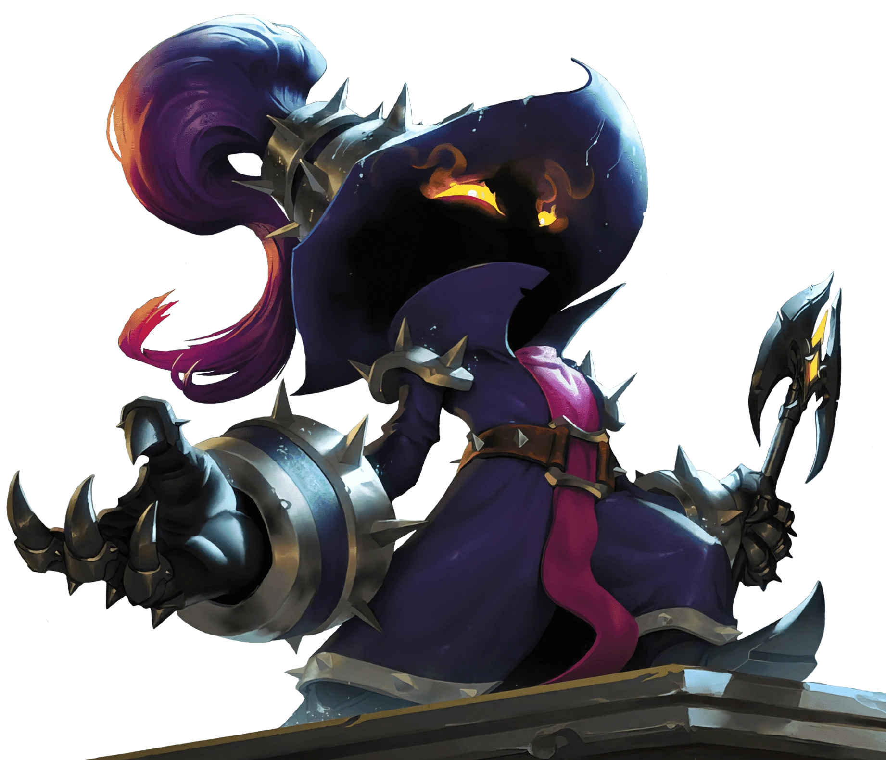

Foto van Tjeerd Kemperman
Personal Information
Name: Tjeerd Kemperman
Date of Birth: 30/08/2001
Age: 24 (since 3 days ago!)
Residency: Tholen, Zeeland
Living Conditions: Parents (Mom and Dad), Younger brother (22 y/o), Two dogs
(Rottweilers)
Previous Education: Software Development Scalda (MBO)
Motivation HZ

One of the main reasons that I chose my next education to be the HBO-ICT education at HZ, was to
see how more advanced the learning would be, and how much it would demand of me as a student. At
Scalda, I did not really feel a lot of pressure, and I did not see myself in a working life just
yet. As such, I went to go to HZ as a good challenge for myself. To see myself working at a
solid pace.
Aside from the increase in pace, I am very willing to learn more. Compared to Software
Development, HBO-ICT offers a lot more to learn, especially content like Data Science and
Computer Science Basics. I have never really had much of that, so that is something new that I
am very willing to pick up.
Extra Curricular Activities
Games: World of Warcraft, League of Legends, Astroneer, Honkai: Star Rail
Entertainment: Anime, WWE

Veigar (League of Legends)
Castorice (Honkai: Star Rail)

Brock Lesnar (WWE)